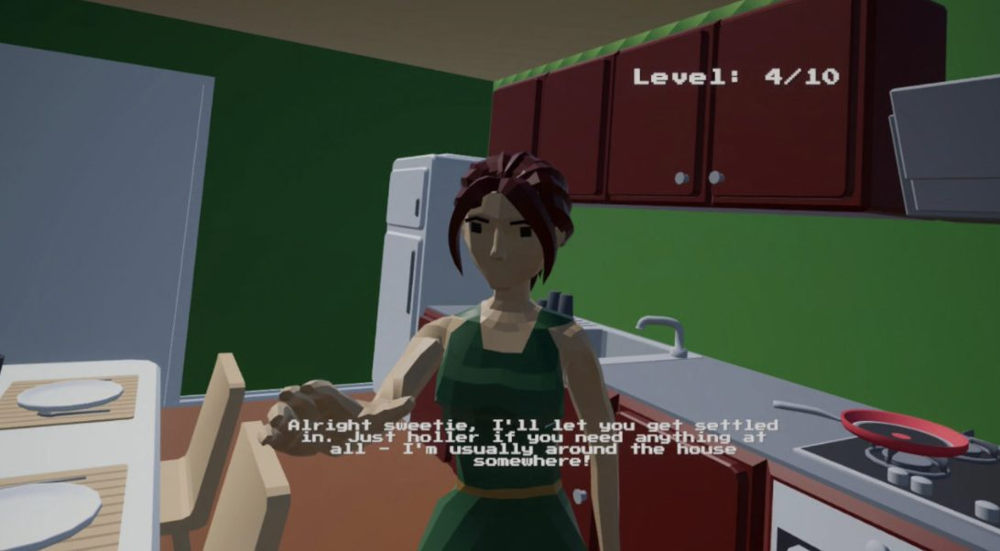
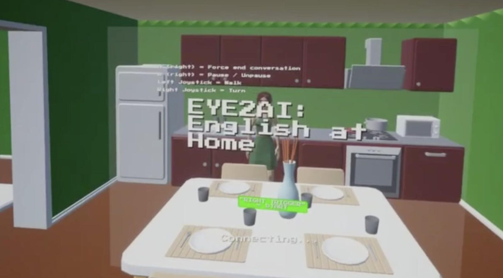
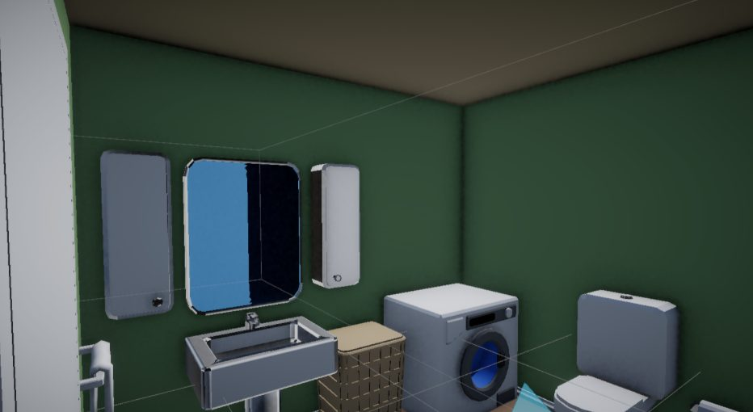

eye2ai.exe



Eye2AI: Gaze-Initiated AI Dialogue for Immersive VR Language Learning
Unity · Meta Quest 3 · Claude Sonnet 4 · Speech-to-Speech · Eye Tracking
An AI-driven VR language-learning platform for English learners, built for Meta Quest 3. Eye-tracking triggers contextual, in-scene conversations with AI-controlled NPCs, closing the comprehension gap left by traditional flashcard-style language apps. I trained and prompt-engineered a Claude Sonnet 4 model against an ACTFL-aligned assessment system that scores fluency, task completion, and conversation length, pushing the interaction toward authentic speech-to-speech communication rather than scripted dialogue trees.
Built for Meta Quest 3 · repo private